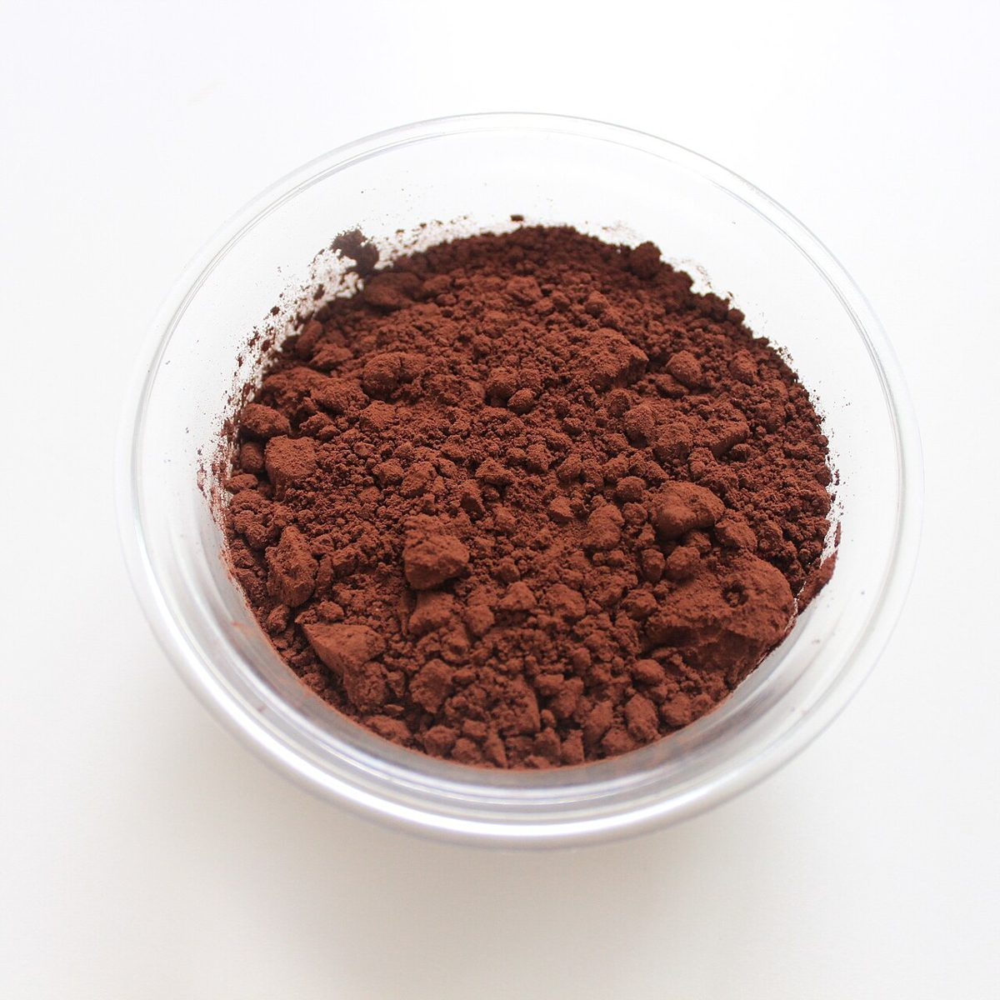
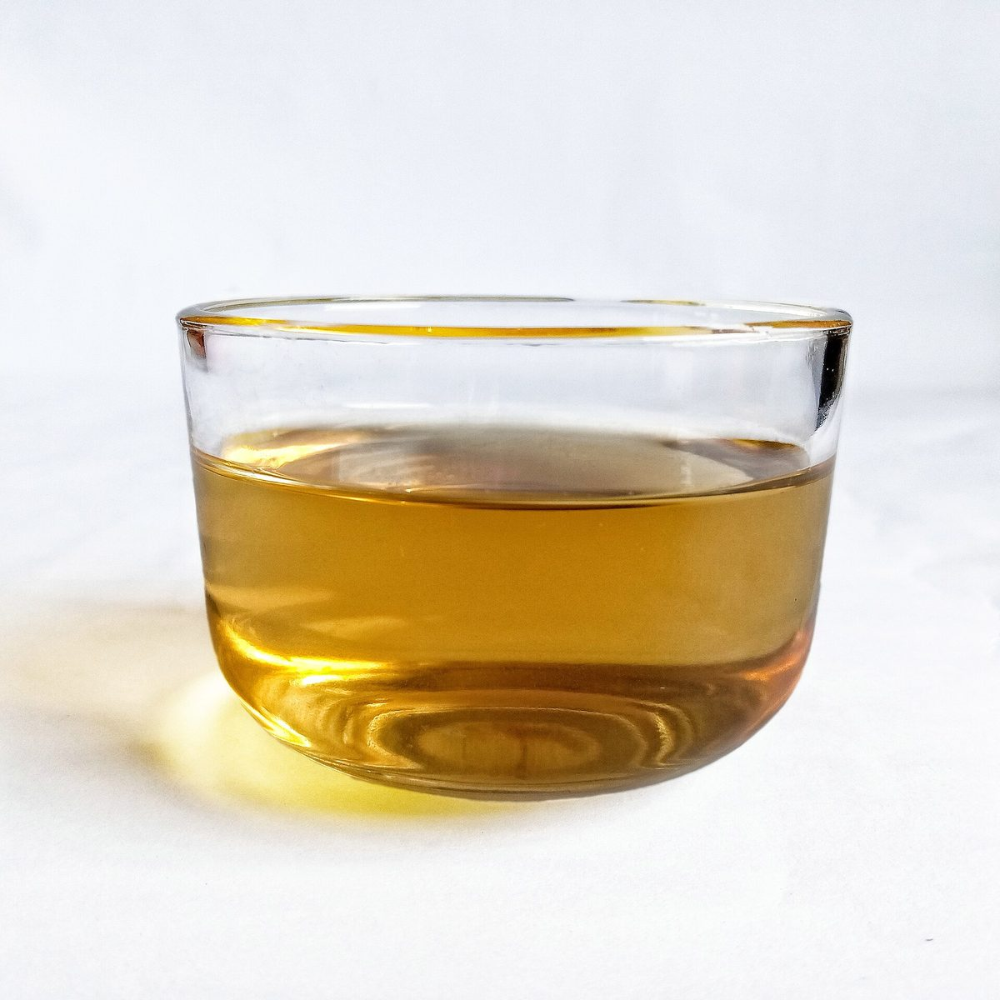
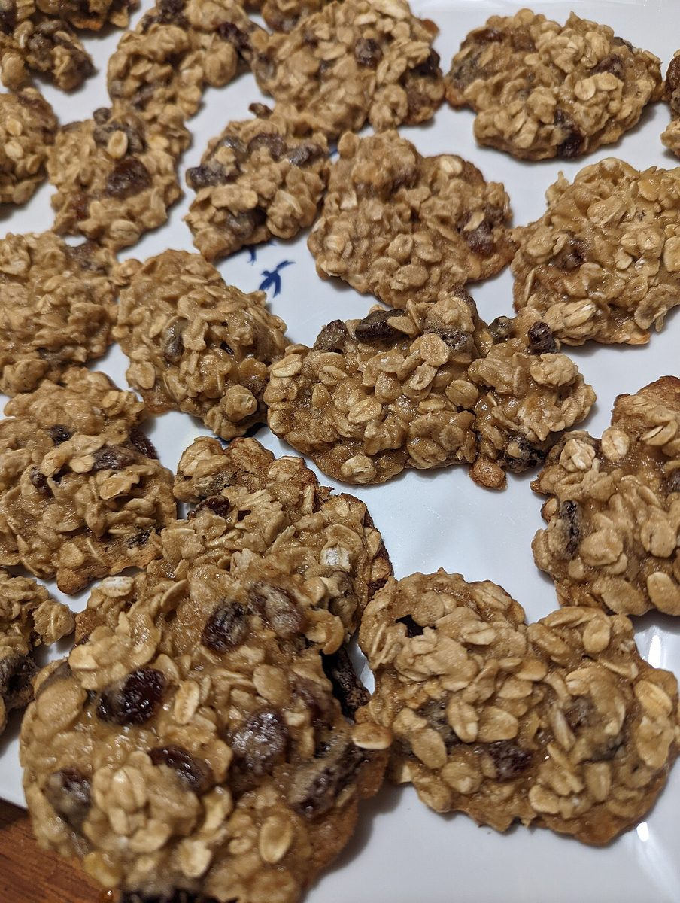

MENU
メニュー
メニューと価格は準備中です。確認でき次第、こちらに掲載します。



写真はイメージです。お店のメニューを示すものではありません。
メニュー表のかわりに
タイヤの部位(前半の三つ)
メニューが整うまでのあいだ、タイヤの部位の配置図をご覧ください。制作側の連想で、お店の理念・由来とは無関係です。
- 1トレッド路面に当たるゴムの面。みぞが刻まれ、ブロック状に並ぶ。
- 2ショルダートレッドの端にあたる、側面へ折れ曲がる肩の部分。
- 3サイドウォールタイヤの側面。表面に文字や模様が入ることが多い。
準備中
お知らせ
| メニュー | 準備中 |
|---|---|
| 価格 | 準備中 |
| ご予約 | 準備中 |



写真はイメージです。お店のものではありません。